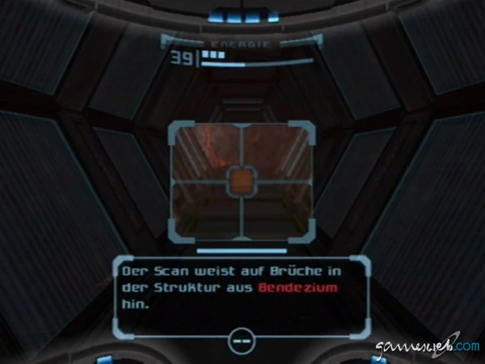

Missions-Briefing: Notruf von der Orpheon
Unsere Mission beginnt mit dem Abfangen eines Notrufs der Raumfregatte 'Orpheon'. An Bord entdecken wir die grausamen Experimente der Weltraumpiraten mit genmanipulierten Lebensformen. Ein Notfall zwingt uns zur Flucht, bei der wir auf dem nahegelegenen Planeten Tallon IV bruchlanden und dabei einen Großteil unserer Ausrüstung verlieren. Von hier an sind wir auf uns allein gestellt.
Kernelemente: Isolation & Erkundung
- Atmosphäre: Die dichte, isolierte Stimmung auf Tallon IV ist das Markenzeichen des Spiels.
- Scan-Visor: Anstatt nur zu kämpfen, scannen wir die Umgebung, um die Geschichte der Chozo und die Schwächen unserer Gegner aufzudecken.
- Verbundene Welt: Die Areale sind nahtlos miteinander verbunden und werden durch neue Fähigkeiten nach und nach zugänglich (Backtracking).
Visor-Technologie
Der Visor ist unser wichtigstes Werkzeug. Der Scan-Visor liefert uns Daten, der Thermal-Visor macht unsichtbare Gegner und Energiequellen sichtbar und der X-Ray-Visor enthüllt verborgene Mechanismen und Schwachpunkte.
Waffen-Upgrades
Power Beam - Die Grundausrüstung
Wave Beam - Durchdringt Energieschilde
Ice Beam - Friert Gegner ein
Plasma Beam - Setzt Feinde in Brand
Die Evolution der Waffensysteme ermöglicht es uns, neue Wege zu erschließen und stärkere Gegner zu bezwingen. Jeder Beam hat einzigartige Eigenschaften und öffnet neue Türen in der Welt von Tallon IV.
Gefahrenanalyse: Bossgegner

Tallon IV beheimatet tödliche Kreaturen. Ob der riesige Parasiten-Wurm Thardus, der unsichtbare Omega Pirate oder Samus' Erzfeind Meta-Ridley – jeder Bosskampf ist ein einzigartiges Puzzle, das den vollen Einsatz unserer Fähigkeiten erfordert.